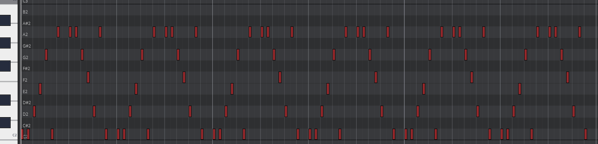

Spis Treści
Używaj selektora po lewej, aby wybrać rozdział.
Użyj strzałek nawigacyjnych, aby poruszać się między treścią.
Czym jest Ciąg Fibonacciego?
Na tej stronie przyjrzymy się jednemu z najbardziej fascynujących i powszechnie znanych ciągów w matematyce - Ciągowi Fibonacciego. Nazwa ta może brzmieć tajemniczo, ale jego zasady są proste, a jego wpływ na wiele dziedzin jest ogromny.

Fibonacci na rycinie z I benefattori dell'umanità
Ciąg Fibonacciego, to ciąg liczb naturalnych określony rekurecyjnie w sposób następujący:
Pierwszy wyraz ciągu jest równy 0, a drugi 1. Każdy następny wyraz jest sumą dwóch poprzednich
Można to zapisać jako: 
Ciąg więc będzie wyglądał następująco:
0 1 1 2 3 5 8 13 21 34 55 89 144 233 377 610 . . .
Więc, F(1) = 0, F(2) = 1, F(3) = 1 F(4) = 2 i tak dalej..
Niektórzy w swoich publikacjach za F(1) dają 1 zamiast zera:
1 1 2 3 5 8 13 21 34 55 89 144 233 377 610 . . .
Znając już zasady tworzenia ciągu, zapszam do uzupełnienia tych prostych przykładów:
F(11) = 11
F(12) = 12
F(13) =
F(12) = 12
F(13) =
F(14) = 14
F(15) = 15
F(16) =
F(15) = 15
F(16) =
F(17) = 17
F(18) = 18
F(19) =
Sprawdź Odpowiedzi
F(18) = 18
F(19) =
Przez swoją prostotę i specifikację ciągu Fibonacciego, często jest używany jako jedno z podstawowych zadań przy nauce programowania.
function Fibonacci(n) {
if(n < 2) return n;
return (Fibonacci(n - 1) + Fibonacci(n - 2));
}
Skrypt generujący kolejne wyrazy ciągu użyty na tej stronie. Skrypt opiera się na metodzie rekurencyjnej.
if(n < 2) return n;
return (Fibonacci(n - 1) + Fibonacci(n - 2));
}
Skrypt generujący kolejne wyrazy ciągu napisany w Assembly. Opracowany przez Michael'a Petch'a
.586
.MODEL FLAT
INCLUDE io.h
.STACK 4096
.DATA
resultLbl BYTE "The result is", 0
sum BYTE 11 DUP (?), 0
.CODE
_MainProc PROC
mov eax,1
mov ebx,1
dtoa sum , eax
output resultLbl , sum
dtoa sum ,ebx
output resultLbl ,sum
mov ecx ,5
_for:
mov edx , eax
add edx , ebx
dtoa sum ,edx
output resultLbl ,sum
mov eax ,ebx
mov ebx ,edx
dec ecx
cmp ecx , 0
jne _for
mov eax , 0
ret
_MainProc ENDP
END
.MODEL FLAT
INCLUDE io.h
.STACK 4096
.DATA
resultLbl BYTE "The result is", 0
sum BYTE 11 DUP (?), 0
.CODE
_MainProc PROC
mov eax,1
mov ebx,1
dtoa sum , eax
output resultLbl , sum
dtoa sum ,ebx
output resultLbl ,sum
mov ecx ,5
_for:
mov edx , eax
add edx , ebx
dtoa sum ,edx
output resultLbl ,sum
mov eax ,ebx
mov ebx ,edx
dec ecx
cmp ecx , 0
jne _for
mov eax , 0
ret
_MainProc ENDP
END
Zapraszam na kolejny rozdział.
Złoty Podział
Jeżeli podzielimy przez na przykład 12 wyraz ciągu:12 i 11 wyraz ciągu:11 otrzymamy 1.61797...
Jeżeli z kolei podzielimy na przykład 20 wyraz ciągu przez 19 wyraz, otrzymamy 1.618033963...
Widzimy, że dzieląc przez siebie coraz większe wyrazy ciągu, otrzymujemy ułamek, który dąży do pewnej wartości. Tą wartością jest Phi, lepiej znana jako złoty podział
Możemy powiedzieć, że 
Iloraz kolejnych wyrazów ciągu dąży do złotego podziału, czyli φ
φ orginalnie zostało zdefiniowane jako "Stosunek długości przekątnych w regularnym pięciokącie wypukłym do długości boków"
Phi jest również jedyn z rozwiązań równiania x2 = x + 1. Euclid z grecji nazywany Ojcem Współczesnej Geometrii uznał phi jako "ekstremalną i niegrzeczą liczbę" , a Luca Bartolomeo de Pacioli nazywany Ojcem Rachunkowości stwierdził, że phi jest "boską proporcją".
Phi mimo swojej genezie w geometrii, występuje również w malarstwie (gdzie jest uznawane jako "podstawa anatomii"), muzyce (w tak zwanym strojeniu Fibonacciego lub Złotym Strojeniu), w naturze (phi występuje w niektórych wzorcach w naturze takich jak rozmieszczenie liści) i w wielu innych, na pozór niepołączonych dziedzinach.
Skąd jednak φ występuje w tak wielu miejscach?
Prawda jest taka, że większość wystąpień phi jest po prostu fabrykacją lub przypadkiem. Jednak przykłady, które wymieniłem faktycznie zawierają phi w swojej naturze
Biorąc pod lupę rozmieszczenie liści na roślinie łodygowej, możemy zaobserwować, że każdy liść jest odchylony od poprzedniego o 137.5°. Stopień ten jest anologiczny do złotego podziału.
Według badań przeprowadzonych na 700 gatunkach rośliń łodygowych, określone zostało, że taki sposób rozmieszczenia maksymalizuje powierzchnię liści odchylonych ku słońcu, jednocześnie zajmując najmniej miejsca w kodzie genetycznym rośliny.
Na następnej stronie przestawię uproszczony schemat rozmieszczenia liści rośliny łodygowej opracowany przez zespół Go Figure.


 ...
...

Jak możemy zauważyć, relatywna inkrementacja kąta następnego liścia jest równa stałej o wartości 137.5°.
Jest to dużo bardziej efektywny sposób zapisu rozmieszczenia liści w kodzie genetycznym niż na przykład rozmieszczenie 4 liści o 90°, następnie kolejnych czterech o 45° i kolejnych ośmiu o 22.5° i tak dalej.
Nie jest to jednak jedyny raz kiedy dana roślina "używa" złotego podziału. W uproszczeniu: kod genetyczny zawierający stałą jest używany w wielu miejscach. Między innymi w sposobie rozmieszczenia nasion w owocu, ilości płatków na kwiecie.
Dość ciekawą konsekwencją tego jest fakt, że liczba płatków, liści, nasion w większości gatunków roślin jest liczbą zawartą w ciągu Fibonacciego.
Zachęcam do pochodzenia sobie po parku, bądź lesie i policzenia ile płatków mają kwiatki. Prawie wszystkie rośliny będą miały liczbę płatkow, które zawierają się w ciągu Fibonacciego
φ jest liczbą ścisle powiązaną z ciągiem Fibonacciego. W następnym rodziale dogłębniej pokażę to powiązanie.
Zapraszam na kolejny rozdział.
Złoty podział a ciąg Fibonacciego
Każdy ciąg zdefinowany przez liniową rekurencję ze stałymi współczynnikami może być zapisany w postaci wyrażenia w zamkniętej postaci.
Wzór na ciąg Fibonacciego w zamkniętej postaci nazywany wzorem Binet'a to:

Gdzie ψ jest sprzężeniem postaci wyrazu.
W tym przypadku ψ = -φ-1, więc możemy to równanie zapisać jako:

Aby zobaczyć związek między ciągiem a tymi stałymi, zauważ, że φ i ψ są obydwoma rozwiązaniami równania x2 = x + 1 i w konsekwencji xn = xn-1 + xn-2, dlatego potęgi φ i ψ spełniają rekurencję Fibonacciego. Innymi słowy:

Wynika stąd, że dla dowolnych wartości a i b, ciąg zdefiniowany przez:

spełnia tę samą rekurencję:

Jeśli a i b są wybrane tak, aby U0 = 0 i U1 = 1, wtedy wynikowy ciąg Un musi być ciągiem Fibonacciego. Jest to tożsame z wymogiem, aby a i b spełniały układ równań:

który ma rozwiązanie:

produkuje wymaganą formułę.
Przyjmując wartości początkowe U0 i U1 jako dowolne stałe, bardziej ogólne rozwiązanie to:
gdzie:

Znając przybliżoną wartość phi, możemy przybliżyć dowolny wyraz ciągu Fibonacciego bez znania poprzedzających wyrazów tego ciągu.
Metoda ta jest dużo szybsza od liczenia każdego wyrazu po kolei i jest często używana jako zamiennik od metody rekurencyjnej. Ważne jednak jest, by pamiętać, że ta metoda jedynie przybliża wartość faktyczną dla danego n, więc nie została ona użyta w żadnym skrypcie na tej stronie.
Zapraszam na kolejny rozdział.
Ciąg Fibonacciego w muzyce
Jeżeli weźmiemy ciąg Fibonacciego i przekownwertujemy liczby na klawisze w standardowej skali C Major (jeżeli liczba "wychodzi" poza skalę, dokonujemy operacji modulo i wynik tego dajemy na skalę) możemy usłyszeć coś ciekawego.
Kliknij tutaj jeżeli komputer nie posiada opcjii odtworzenia dzwięku

Możemy usłyszeć, że zbiór nut się powtarza. Można pomyśleć, że to dość dziwne, ale kiedy pozna się mechanizm za tym stojący, okazuje się, że takie zachowanie jest dość oczywiste.
W tym przykładzie muzycznym, dokonywałem operacji modulo na każdej z liczb i wynik wstawiałem na skalę muzyczną. Operacja modulo to nic innego jak reszta z dzielenia.
Na następnej stronie przedstawię resztę z dzielenia pierwszych 32 wyrazów ciągu Fibonacciego przez 7.
Kliknij aby wygenerować.
Na szaro zaznaczyłem co 16'stą operację. Od tego momentu wynik się powtarza.
Autorzy strony:
Kacper Dyduch
Małgorzata Stadnicka
Kacper Dyduch
Małgorzata Stadnicka